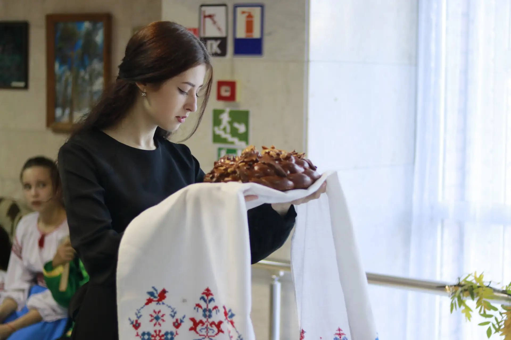

Цель проекта
Культура как пространство общей памяти и действия
После участия в проекте школьникам 7–11 классов станет легче понимать свою страну и место Луганщины в её истории. Они узнают больше о регионах и народах России, научатся находить достоверную информацию, уверенно обсуждать книги и культурные события, работать в команде и создавать собственные полезные проекты.
У детей появятся новые культурные впечатления, идеи для путешествий по России, уважение к семейной и исторической памяти, опыт общения со сверстниками из других регионов и понимание того, как лично участвовать в развитии своей школы, библиотеки и республики.
Актуальность
Ценностная основа
Проект помогает подросткам увидеть место Луганской Народной Республики в общем историко-культурном пространстве страны, укрепить связь поколений и получить опыт совместной творческой деятельности.
Содержание сформировано с учетом Основ государственной политики по сохранению и укреплению традиционных российских духовно-нравственных ценностей, утвержденных Указом Президента Российской Федерации от 9 ноября 2022 года № 809.
Задачи проекта
- Расширить знания учащихся о литературе, истории, культуре и географии России.
- Раскрыть культурные связи Донбасса с другими регионами страны.
- Укрепить уважение к исторической памяти, семье и культурным традициям.
- Развить навыки чтения, аргументированного диалога и командной работы.
- Вовлечь подростков в культурную жизнь библиотеки и местного сообщества.
- Создать условия для общения школьников, краеведов и деятелей культуры.
- Повысить доступность культурных событий через программу «Пушкинская карта».
- Превратить участников из зрителей в исследователей, авторов и ведущих.
Учащиеся 7–11 классов Луганска
Выбор школы доступен в каждой форме регистрации. Начните вводить официальное название или номер школы в поле поиска. Это позволяет зарегистрироваться учащимся любого образовательного учреждения Луганска без риска исключить школу из-за неполного или устаревшего перечня.
Возраст участника проверяется формой: регистрация предусмотрена для подростков от 12 до 18 лет.
Молодёжь, культура, совместное действие
.jpg)

.jpg)
.jpg)
Квартальная программа
I
I квартал · 16 февраля · краеведческая лаборатория
Мой край в истории России
Культурная карта ЛНР, литература и памятные места Луганщины, судьбы земляков и семейные реликвии.
Результат: интерактивная карта «Луганщина: люди, книги, места».
Ценности: историческая память, преемственность поколений, патриотизм.
II
II квартал · 15 июня · литературный маршрут
Пушкин объединяет
География жизни и творчества А. С. Пушкина, язык как культурный код, пушкинские места России.
Результат: аудиооткрытки или видеозарисовки «Мой Пушкин».
Ценности: высокая культура, созидание, достоинство, общая культурная идентичность.
Регистрация на мероприятие II квартала
III
III квартал · 14 сентября · этнокультурная экспедиция
Россия многоликая
Сказания, музыка, орнаменты, традиции гостеприимства и литературные голоса народов России.
Результат: книжный атлас «Традиции, которые нас объединяют».
Ценности: единство народов России, взаимоуважение, взаимопомощь.
Регистрация на мероприятие III квартала
IV
IV квартал · 14 декабря · проектная мастерская
Создавая будущее вместе
Образ будущего в отечественной литературе, созидательный труд, культурное волонтерство.
Результат: подростковые мини-проекты и итоговая выставка.
Ценности: ответственность, созидательный труд, гуманизм, милосердие.
Регистрация на мероприятие IV квартала
Сценарная модель встречи
| Этап | Время | Содержание |
|---|---|---|
| Погружение | 10 мин. | Яркий факт, предмет, фрагмент текста, аудио- или видеоматериал. |
| Содержательный блок | 20 мин. | Рассказ библиотекаря или приглашенного эксперта с опорой на источники. |
| Командное исследование | 25 мин. | Работа с книгами, картами, документами и цифровыми материалами. |
| Творческая мастерская | 25 мин. | Создание карты, аудиооткрытки, страницы атласа или мини-проекта. |
| Рефлексия | 10 мин. | Представление результатов, обратная связь и анонс следующей встречи. |
Принципы проекта
- Историческая достоверность. Работа с проверенными библиотечными, архивными и музейными источниками.
- Единство в многообразии. Уважительное представление культур и традиций народов России.
- Диалог поколений. Семейные истории и встречи с носителями культурной памяти.
- Соучастие. Подростки выступают исследователями, авторами и ведущими.
- Возрастная уместность. Формы соответствуют интересам учащихся 7–11 классов.
- Добровольность и уважение. Свободное высказывание без унижения достоинства.
Ожидаемые результаты
4культурно-просветительских мероприятия в год
100+посещений за полный цикл проекта
4коллективных творческих продукта
70%отмечают рост интереса к культуре и истории
50%посещают два и более события цикла
5+подростковых культурных инициатив
Сотрудничество
Партнеры
Образовательные организации ЛНР, учреждения культуры, музеи и архивы, писатели, краеведы, артисты, молодежные объединения, родители, представители старшего поколения и региональные СМИ.
Организация
Условия реализации
Каждое мероприятие оформляется и проходит модерацию программы «Пушкинская карта» отдельно. Организатор утверждает даты, стоимость и площадку, соблюдает авторские права, требования к обработке персональных данных, возрастной уместности и безопасности участников.
Полезные ссылки
Национальная электронная детская библиотека
Электронная коллекция детских книг, журналов, диафильмов и других материалов для чтения, учебы и знакомства с историей детской литературы.
nebdeti.ru
Библиогид
Навигатор по современной и классической литературе для детей и подростков: обзоры книг, рекомендации, авторы и тематические подборки.
bibliogid.ruПроДетЛит
Энциклопедический портал о детской литературе, писателях, художниках-иллюстраторах, издательствах и значимых произведениях.
prodetlit.ruВебЛандия
Каталог проверенных и безопасных интернет-ресурсов для детей и подростков по учебе, культуре, науке, творчеству и досугу.
web-landia.ru
Материалы проекта
Афиша
В макете предусмотрены редактируемые поля для даты, времени, адреса, стоимости, контактов и QR-кода билетной страницы.
Открыть афишу